Why This Matters
🏗️ You build the guardrails
Managers can only reject what looks wrong to them. Admins define what "wrong" means system-wide - job codes, overtime rules, holiday alignment - through policies and alerts.
📊 You own the exceptions report
The custom report that lets the Accounting Manager review in batches instead of one timesheet at a time is built from the policies, dimensions, and exports covered in this guide.
🔁 You close the loop
Alerts and approval routing decide whether a correction goes back to the employee and manager - or lands, again, on Finance's desk.
Sections roughly follow the order you'd configure a new region or policy in: get oriented in Time Settings and permissions, understand how policies attach to time entries, build the custom pay/approval/alert rules, layer in weekend and holiday alignment, then verify the data leaving Rippling actually reaches Intact correctly.
Every screenshot in this guide is pulled directly from Rippling's own Help Center articles.
How Time Tracking Policies Are Applied
Every time entry in Rippling carries a set of policies that decide how the worker's hours get classified. There are four policy types, and a worker can only match one policy per type - if they qualify for more than one, the first in priority order wins.
| Policy type | Controls |
|---|---|
| Time tracking policy | Tracking method, workweek settings, rounding rules |
| Overtime policy | Overtime classification rules and pay rates |
| Break policy | Eligible break types, durations, compliance rules |
| Custom pay policy | Company-specific pay rules - shift differentials, holiday incentive pay, minimum shift length |
Rippling strongly recommends assigning policies through supergroups (based on department, work location, employment type, etc.) rather than one worker at a time. New hires and role changes then inherit the correct policy automatically as their employment evolves - this is exactly the kind of manual work this guide is meant to eliminate.
A mismatch means a time entry's applied policy differs from what the worker is currently assigned. This is visible on time entries as an alert icon in the Policies applied to this time entry tab (Timesheets > Worker > Time entry > ">" > Policies). There are four kinds:
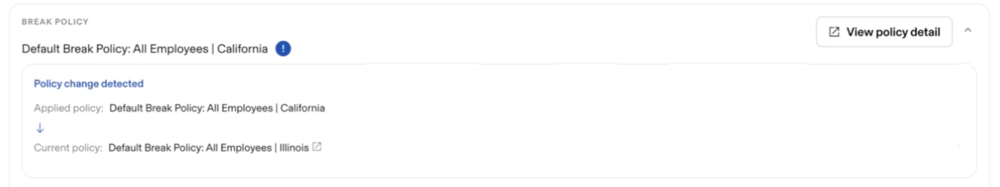
Worker moved to a different policy - here, a Break policy mismatch where the applied policy (California) no longer matches the current one (Illinois) after a location change.
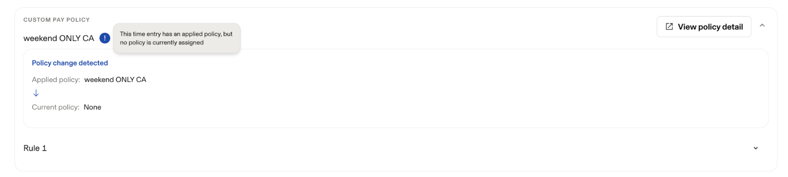
Worker no longer qualifies for any policy of that type - the entry still shows the previously applied "weekend ONLY CA" custom pay policy, but current assignment reads "None."
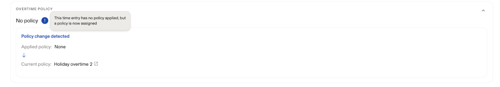
The overtime policy tile reading "No policy" - applied policy is blank, current policy is now "Holiday overtime 2." Same underlying mismatch, opposite direction.
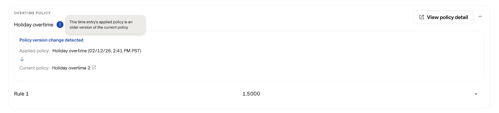
The entry reflects an older, timestamped version of "Holiday overtime 2" that's since been edited - same policy name, different version.
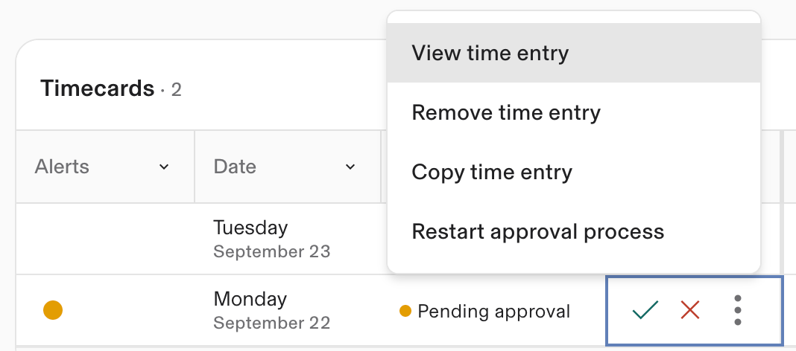
From Timesheets, the ⋮ menu on a flagged entry gives you View, Remove, Copy, or Restart approval process.
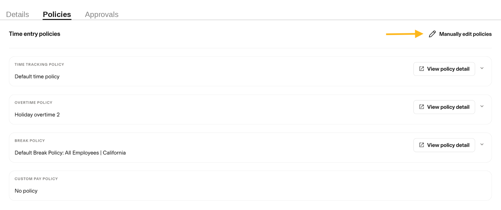
This tab lists all four policy types side by side with a Manually edit policies link if a correction is needed.
| Entry status | What you can do |
|---|---|
| Not yet approved | Manually update the applied policies on the time entry directly |
| Payroll run approved, not paid | Unapprove the pay run (affects all entries in it - coordinate with payroll first), restart the approval process, then edit |
| Already paid | Cannot be edited - correct via an adjustment in a subsequent payroll run |
If a worker changed location mid-period, entries before the move correctly reflect the old policy - that's expected, not an error. No action is needed if the mismatch accurately reflects the rules that applied when the hours were worked.
Custom Pay Policies
Custom pay policies handle company-specific pay rules - shift differentials, holiday incentive pay, minimum shift lengths - that go beyond standard overtime and break compliance. They're built in three steps:
- Set up a custom pay rate - the dollar amount or multiple you want to pay out, configured in Rippling Payroll or Global Payroll
- Set up the policy - one or more rules, each a condition (or conditions joined with AND/OR) plus an action
- Assign members - by supergroup or attribute, same recommendation as any other policy
Rippling evaluates overtime policies before custom pay policies.
The Hours over/under threshold condition is the building block behind a "days exceeding 8 hours" flag.
To get to this condition builder: Timesheet > Time Settings > Time Tracking Alerts > New Alert > Start.
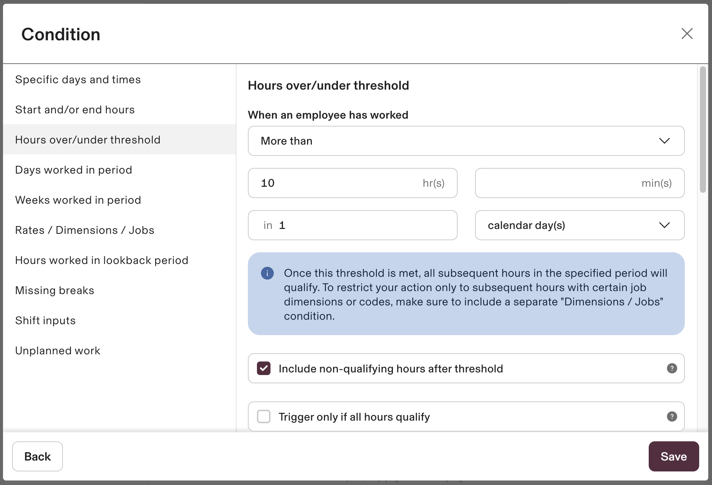
Configured here for "more than 10 hr(s) in 1 calendar day(s)" - the same condition, set to more than 8 hr(s) in 1 calendar day(s), is what drives the "days over 8 hours" flag in the exceptions report.
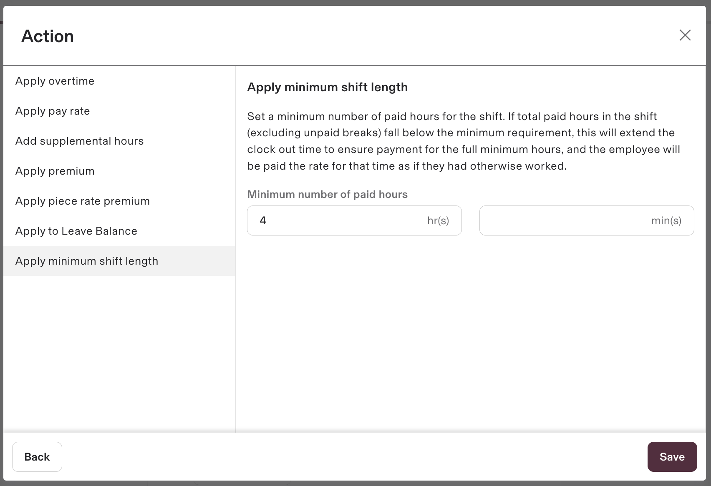
Extends the clock-out time so a short shift still pays for the full minimum - one of several action types beyond a straight pay-rate override.
To get here: Time > Time Settings > Attendance > Custom pay > Add new policy > Rule 1 > + New condition > Save > + Add action.
| Setting | Effect |
|---|---|
| Include non-qualifying hours after threshold | Counts hours worked on non-matching job codes toward the trigger period once the threshold is hit (checked/default) |
| Trigger only if all hours qualify | Condition only fires if every hour in the period meets the qualification - no partial matches |
| Trigger for whole shift if condition is satisfied | (Within a shift) - once met, the entire shift counts as qualifying, not just the hours over threshold |
| Count the entire shift once the threshold is met | (Time range periods, Global Payroll only) - same idea applied to a defined time range, e.g. a night-shift window |
Condition: "more than 8 hours in job code A in a week." An employee works 8 hours in code A on Monday and 8 hours in code B on Tuesday. With the setting enabled (default), Tuesday's hours count toward the trigger even though they're a different code, once the threshold is met. With it disabled, Tuesday doesn't trigger the condition at all - only hours actually worked in code A count.
- Apply pay rate - replaces the base rate for qualifying hours (highest wins if multiple rules apply; doesn't stack)
- Apply premium - adds pay on top of base rate (stacks across rules) - the recommended action for salaried employees, since pay rate actions replace base pay and complicate proration
- Apply piece rate premium, apply to leave balance, add supplemental hours, apply minimum shift length
A custom pay policy only applies within the payroll application, country, and entity it was configured for. Covering both US Payroll and Global Payroll - or multiple Global Payroll countries - requires a separate policy for each.
Approvals & Soft Locking
As an admin, you can review, approve, or reject time entries for any employee - in either the Timesheets or Timesheets experience - and super admins can override a multi-step approval chain, unless they're the assigned approver at step 2 or later.
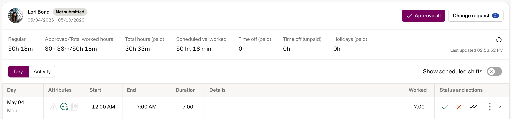
Approve all at the top, per-entry approve (✓) / reject (✕) / ⋮ actions on each row, and Change requests flagged separately.
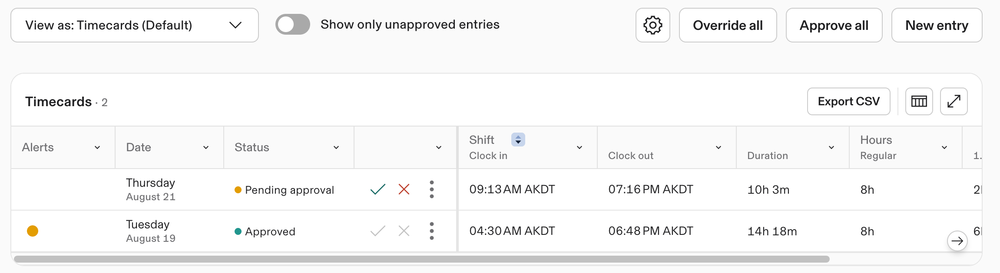
Override all is admin-only and bypasses a multi-step chain even if earlier approvers haven't signed off; Approve all respects it.
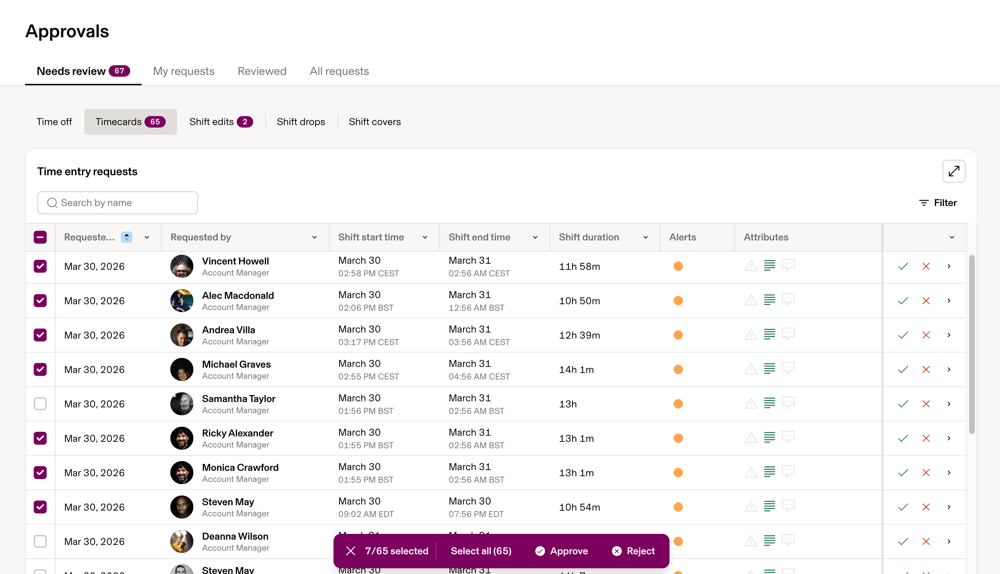
Time > Approvals > Needs review > Timesheets - select multiple entries and approve or reject in one action across employees, not just within one timesheet.
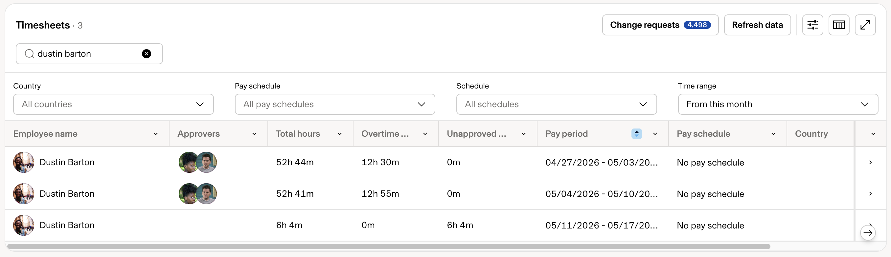
Search by name and filter by country, pay schedule, or pay period before opening an individual timesheet for detailed review.
A soft locking policy adds super admins as a required additional approver for any time entry submitted after the pay period end date - exactly the late-correction scenario that needs oversight, rather than letting the Accounting Manager quietly edit in place.
- Time > Time Settings > Attendance > Timesheet approvals
- Click + New → select the Soft locking timesheet recipe card
- Click Customize this policy, review settings, then Create approval policy
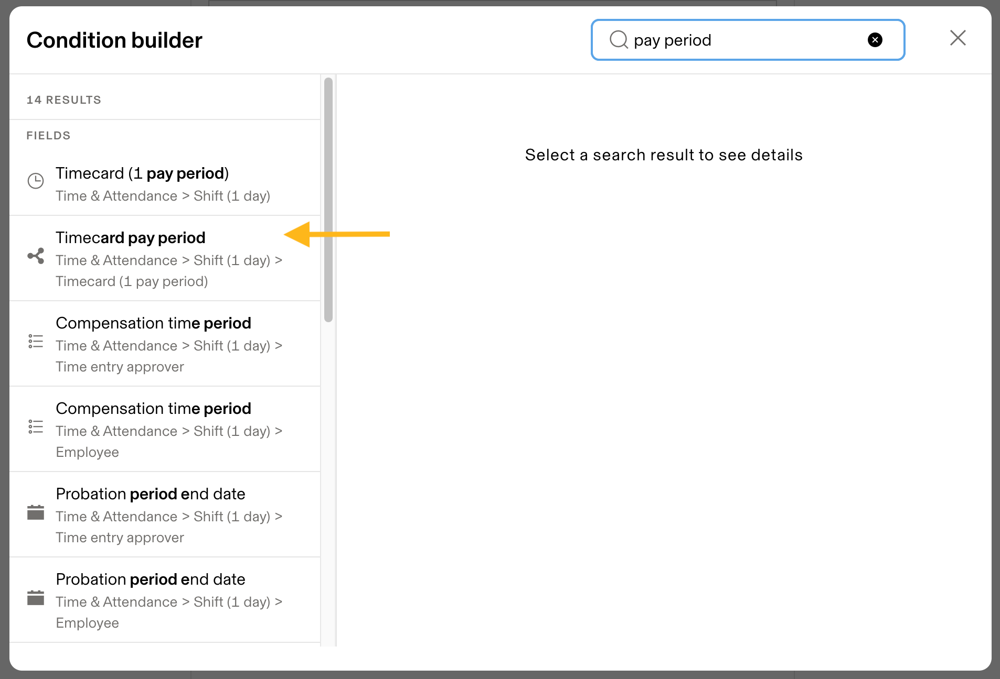
When adding the overlap-prevention condition below, search the condition builder for pay period to find Timesheet pay period quickly.
A regular time entry approval policy that isn't tied to a specific pay period can fire at the same time as the soft lock. Add a condition to your non-soft-locking policies - Timesheet pay period > Pay Period End Date > is after > Today - so the soft lock owns past periods and the regular policy owns current/future ones.
Time Tracking Alerts
Alerts are the mechanism behind "route corrections to the employee and manager instead of the Accounting Manager fixing in place." Think of an alert as a small workflow: a trigger event, optional conditions to narrow it, and one or more actions.
| Type | Examples | Editable? |
|---|---|---|
| Rippling default | Various system alerts | Not editable |
| Customizable default | Missed clockout (>12 consecutive hrs); Unapproved hours (3 days before payroll deadline, 2:30pm) | Editable |
| Custom | Built from scratch - any trigger + condition + action combination | Fully custom |
To get here: Time > Time Settings > Attendance > Time tracking alerts > New alert > name it > Start (under Alert trigger).
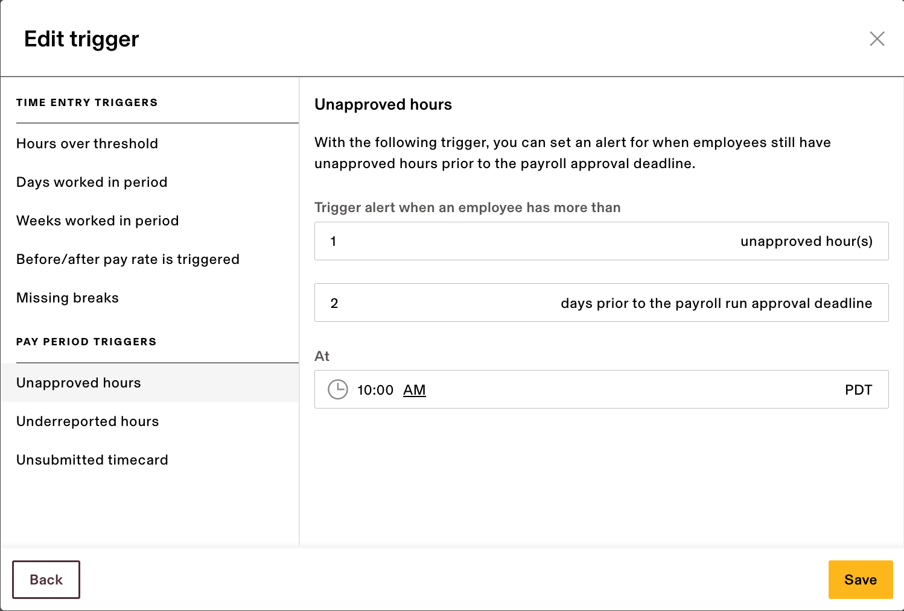
Unapproved hours, shown here set to fire when more than 1 hour is unapproved, 2 days before the payroll approval deadline.
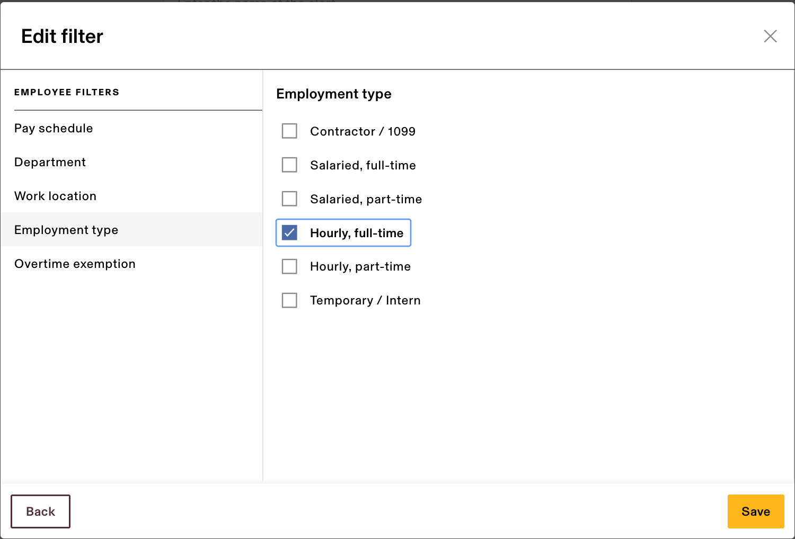
Filter by pay schedule, department, work location, employment type, or overtime exemption - here scoped to Hourly, full-time only.
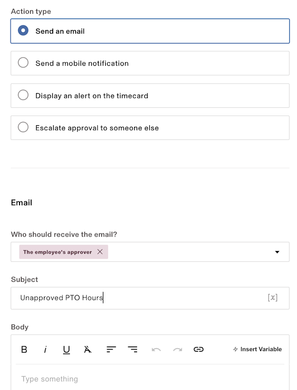
Send an email - here routed to the employee's approver, which is exactly the "route to manager, not Accounting" pattern this guide is meant to enable.
- Send an email
- Send a mobile notification
- Display an alert on the timesheet
- Escalate approval to someone else (approves the timesheet, but won't show as the approver of record - approver names are still driven by approval policies)
Time tracking alerts are real-time - tied to an actual clock-in/clock-out. If a worker self-reports hours after the fact (common for the non-US, monthly-paid population), no alert will trigger. Build the exceptions report to catch these independently rather than relying on alerts alone.
Any alert trigger based on the payroll approval deadline requires the worker to be on an active pay schedule and paid through Rippling Payroll - without one, Rippling can't calculate a deadline and the alert simply won't fire.
Jobs, Contract Codes & Manual Entries
"Projects not aligned to regions" - one of the five flags in the exceptions report - traces back to how job dimensions are assigned on an employee's profile. Getting this right at setup is what makes the flag meaningful downstream.
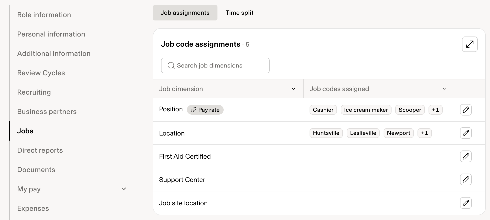
Employee profile > Jobs > Job assignments - each job dimension (Position, Location, etc.) lists the codes assigned. This feeds directly into custom pay conditions and the exceptions report's region-alignment check.
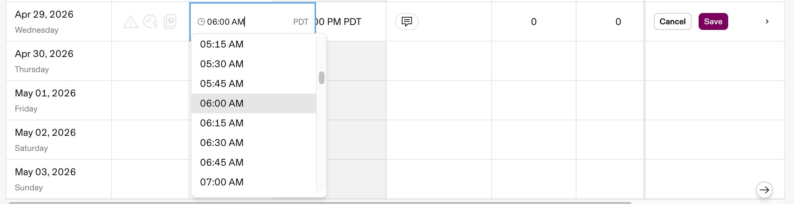
Admins can add a time entry on a worker's behalf in both the new Timesheets and legacy Timesheets experiences - useful for correcting a missed entry without waiting on the employee to resubmit.
Fixing an entry directly solves the immediate problem but does nothing for the "fewer mistakes at the source" goal. Prefer escalation back to the employee + manager wherever the approval deadline allows it (see Sections 5 & 6).
Weekend & Holiday Alignment
Weekend policies are the configuration layer behind the "country-holiday misalignment" flag: they define what counts as a weekend for each population, which in turn determines whether hours or leave logged on a given day should trigger a review.
- From the main sidebar, select Time
- From the Time sidebar, select Time Settings
- In the Time Off section, click Weekends
- Click Add new policy
- Enter a name for the policy
- Check the days of the week that are weekend days for that population
- Click Create
If a worker isn't assigned to any weekend policy, Rippling defaults their weekend to Saturday and Sunday - regardless of the actual work week in their country. For regions where the work week runs Sunday–Thursday or similar, this default alone will misfire the weekend-hours check until a policy is assigned.
Same recommendation as every other policy type: assign by supergroup or attribute (department, work location, employment type), not by individual - Weekends > policy > pencil icon next to Members. Rippling evaluates a company's weekend policies in order; the first one that matches a given employee is the one applied, so drag policies into the right priority using the three-dot handle on the policy list.
| Scenario | How to configure it |
|---|---|
| Population works a standard Sat/Sun-off week | No policy needed - this is the default |
| Population works weekends (e.g. retail, on-call) | Create a policy with their actual non-working days checked instead |
| Population works a 7-day rotation with no fixed weekend | Create a policy with no days checked - lets employees request time off on any day |
If a company holiday configured in a holiday policy falls on a day the weekend policy designates as a weekend day, the employee is not paid for that holiday. Confirm each country's holiday calendar against its assigned weekend policy before the holiday hits - this is a likely root cause if "country-holiday misalignment" flags a missing holiday credit rather than an incorrectly logged entry.
Exports & Non-Payroll Workers
This section is the direct answer to the resolution-path question: does the Rippling → Intact export contain everything Finance needs?
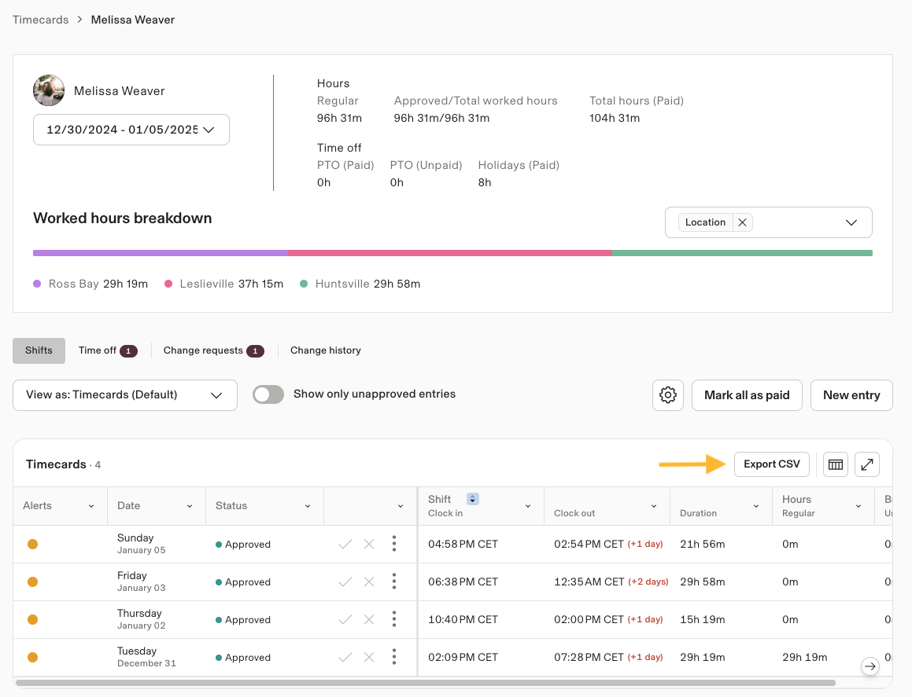
From a single employee's Timesheets, the Export CSV button pulls that worker's pay period detail.
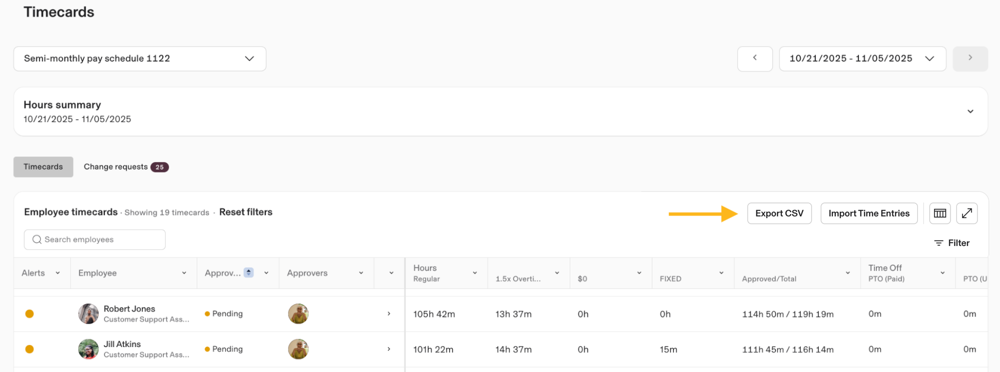
The same Export CSV action is available from the all-employees Timesheets list, alongside Import Time Entries.
Timesheet CSV exports (individual or all-employees) do not include job or contract code fields. If Intact's mapping requires contract codes, this export cannot be the sole source - confirm with Finance whether a supplemental report (e.g., the custom exceptions report) needs to carry that field instead.
International contractors, unpaid workers, and companies using time tracking without Rippling Payroll all result in workers without an assigned pay schedule. Their time entries display a "These entries are not associated with a pay schedule in Rippling" notice and won't sync to a pay run automatically.
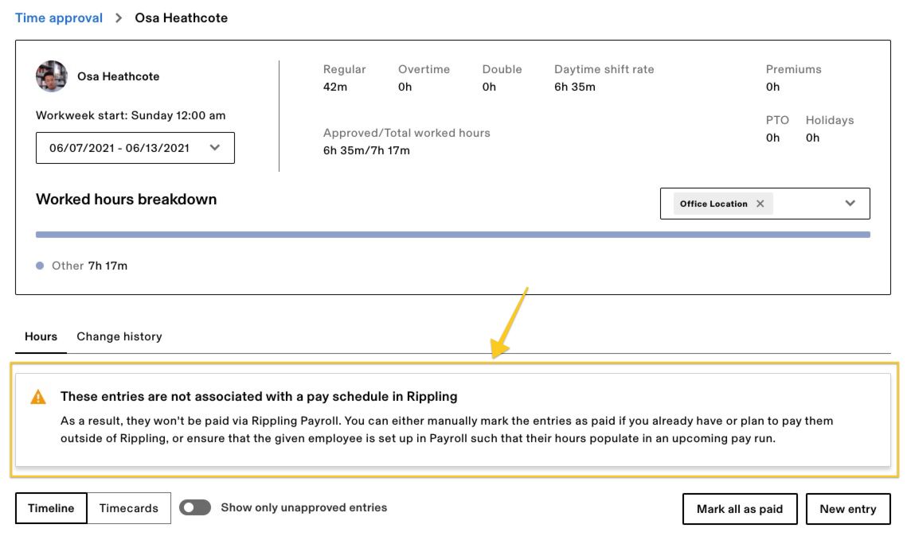
An orange banner on the worker's Time approval page - the "Other" hours bucket accumulates worked time that has nowhere to sync until a pay schedule is assigned or the hours are manually marked paid.
- If they should be paid through Rippling - assign them a pay schedule in Payroll
- If they're paid outside Rippling - manually mark the shift(s) as paid (Timesheets > worker > ⋮ > Mark time entry as paid, or Mark all as paid) to keep an accurate record without double-paying
Troubleshooting
These are the two support tickets admins file most often. Both are self-diagnosable in a few minutes.
| Cause | Fix |
|---|---|
| Not assigned to a pay schedule | Payroll Overview > People > Payroll ready > assign the pay schedule |
| Recently moved to a new schedule | Wait 12–24 hrs for the new timesheet to generate; older hours stay under No pay schedule |
| Contractor is Milestone (Invoice by job) type | Always shows No pay schedule by design; switch to Time tracking contract type if they should be paid per period |
| Start date changed to the future | Worker is inactive until that date; entries auto-reassign once active again |
Regardless of cause, these hours require a manually created off-cycle pay run to get paid - they will not flow into a normal run on their own.
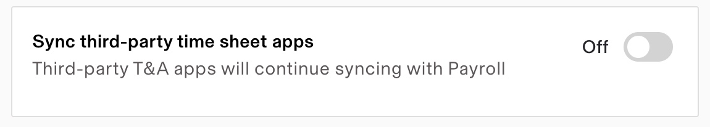
If this toggle is on, a connected third-party app's hours are prioritized over Rippling's own - the most common reason Rippling hours appear to silently stop syncing.
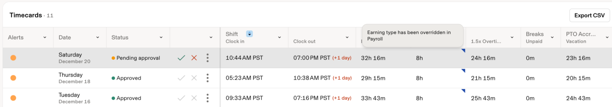
The alert icon and "Earning type has been overridden in Payroll" tooltip flag an entry where a manual edit is now blocking that field's automated sync.
| Cause | Fix |
|---|---|
| Hours not approved | Approve in Timesheets before the pay run is approved |
| No active pay schedule | Assign one in Payroll; unassigned hours need manual addition to a run |
| Pay run already approved/paid | Late approvals route to an extra hours pay run automatically |
| Third-party T&A integration installed | Third-party hours are prioritized over Rippling's - disable sync per run, or remove the integration for a permanent fix |
| Employee transitioned mid-period | Expected - pre-transition hours pay out via a system-generated transition run; verify via the employee's View History |
| Manual edit made to the pay run | Manual edits block automated sync for that field going forward - revert the edit to resume syncing |
Additional Resources
Cross-training and related guides:
→ Manager Guide: Reviewing & Approving Timesheets → Employee Timesheet Training → Training Hub Overview → Download: Admin Quick Reference Guide (PDF)